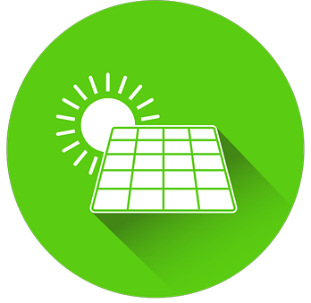

Como a tecnologia pode ser uma aliada na Sustentabilidade?
Abrir
A tecnologia está cada vez mais presente em nosso cotidiano, desde a forma como nos comunicamos até como realizamos tarefas simples do dia a dia. Além disso, ela também pode ser uma grande aliada na busca por um mundo mais sustentável.
Abrir
A tecnologia também permite a adoção de práticas mais sustentáveis no dia a dia, como o uso de videoconferências em substituição às reuniões presenciais, o que reduz a necessidade de viagens e, consequentemente, a emissão de gases poluentes.

Abrir
Outra forma em que a tecnologia pode ser uma aliada na sustentabilidade é por meio de sistemas de gestão de energia. Esses sistemas permitem que a energia seja utilizada de forma mais eficiente, como a energia solar.
Abrir